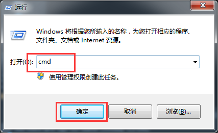

windows基础篇2.如何打开windows命令提示符
方法1,通过快捷键:
1.按下键盘windows键同时按下R键->显示运行窗口 2.在打开输入框中，输入:
cmd
如图2-1所示:

[图2-1]
3.按回车，显示命令提示符.
方法2,通过开始菜单:
点击桌面左下角开始菜单->所有程序->附件->命令提示符
如图2-2所示:
[图2-2]
方法3,通过shift键和鼠标右键:
按住键盘Shift键,同时在桌面空白处点击鼠标右键,在弹出菜单中选择"在此处打开命令窗口".
如图2-3所示:
[图2-3]